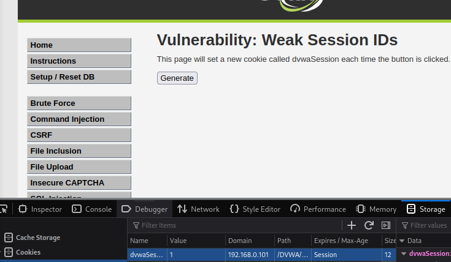
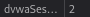
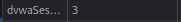
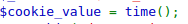
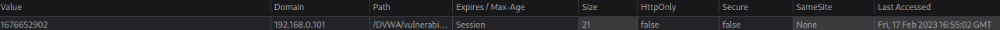
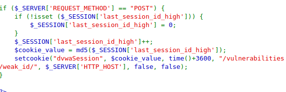
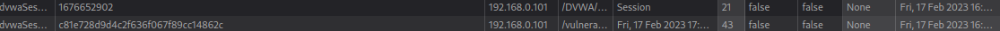

en esta pagina nuestro objetivo es entender el patron que se genera en la variable dvwaSession ya que es el variable de las cookies
LOW: al ir iterando dentro de la pagina y ver el source de este es muy facil ver como la iteracion aumenta de a 1

refresh:

second refresh:

MID: Al primer instante dentro del source de la pagina se ve como la variable tiene dentro time() la cual muestra los segundos actuales del dia

al ir probando muestra un numero alto, el cual al esprar una determinado cantidad de segundos y hacer F5 este aumenta esa cantidad de segundos, lo cual afirma que la variable de las cookies es el segundo del dia en el cual fue ejecutado
primer refresh:

16:55:02 to seconds is 1676652902
HARD: SOURCE:

al ver el source lo primero que notamos es que la variable cookie_value depende directamente de la variable sessions, la cual aumenta de a uno por cada refresh de pagina, luego este se codifica en md5 y tambien se le asigna otro valor el cual es los segundos del dia + 3600, por lo que podemos ver que el md5 es simplemente las iteraciones del refresh.
